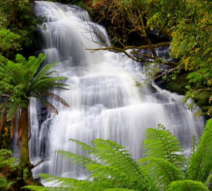
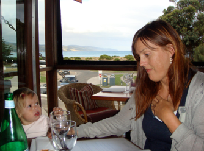

Great ocean Road

Lillejuleaften i skoven
søndag den 23. december 2007

Det er d. 23. December, og vi sidder her på den anden side af jorden. Det virker som om australierne er taget på sommerferie, og ikke går særlig meget op i julen. Det er meget afslappet, og lidt noget andet end alt halløjet hjemme. Vi går en tur på stranden, hvor vi får en snak med livredderen. Vandet her er åbenbart altid kun omkring 14 - 16 grader, så vi nøjes med at soppe.
Det er en rigtig god hajsæson i år, så vi skal passe lidt på. Der er adskillige farlige arter i farvandet, og hajerne kommer helt ind på en meters vand, men hvis der er en sælkoloni i nærheden skulle man være rimelig sikret, da de så har rigeligt med mad.
Vi spiser frokost, lægger ungerne og slapper lidt af. Kl. 14.00 drager vi mod regnskoven i vores lejede bil, hvor der skulle være en dejlig vandretur på en times tid til nogle flotte vandfald. Det viser sig at holde stik. efter en times kørsel og ca. 40 minutter gennem den tætte skov, kommer vi til Cape Otway Triplet Falls. Her er helt troldeagtigt med ekstremt høje og gamle træer og det smukkeste store vandfald, der kommer i tre etaper (deraf navnet). Endnu en gang må vi konstatere, at de svært tilgængelige besøgspunkter også ofte er de mest interessante.

Vi pakker, ordner lidt julegaver og ser Harry Potter på DVD. I morgen skal vi møde mormor og morfar Per i Melbourne. Det er lidt underligt at tænke på. Mormor har selvfølglig købt et lyserødt juletræ med til pigerne, så det skal nok blive rigtig jul.
Cape Otway og Beech forrest ligger ca. 1 time fra Apollo Bay. Det er et meget flot stykke regnskov, hvo der er masser af vandfald, bl.a. Otway Triplet Falls, som vi valgte at gå ind til.
Billedet er taget med ekstra lang lukkertid, et trick, de bruger meget hernede, når de fotograferer vandfald. Det giver en ret flot effekt, men kræver et stativ eller en tripod.